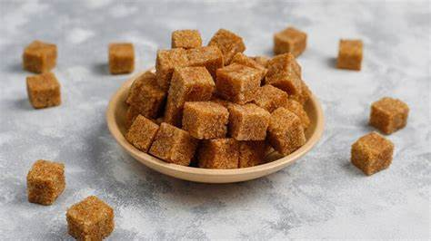

Our Products
We offer premium quality jaggery in various forms. Below is one of our best-selling products:
Premium Organic Jaggery Block
Price: ₹150 per kg
Description: Made from the freshest sugarcane juice, this organic jaggery block is free from chemicals and artificial preservatives. Rich in taste and health benefits.
1. Premium Organic Jaggery Block
Price: ₹150 per kg
Made from fresh sugarcane juice, this block is free from chemicals and rich in minerals.
- Rich in Iron
- Natural detoxifier
- Boosts immunity
.jpeg)
2. Liquid Jaggery
Price: ₹180 per liter
Perfect for baking and sweetening beverages, this unrefined syrup retains all the nutrients.
- Great sugar substitute
- Good for cold and cough
- Enhances taste naturally
.jpeg)
3. Jaggery Cubes
Price: ₹160 per kg
Convenient bite-sized cubes for easy consumption and travel use.
- Portable energy source
- Prevents anemia
- Easy to store and use
.jpeg)
4. Powdered Jaggery
Price: ₹140 per kg
Perfect for everyday cooking – dissolves easily and mixes well with recipes.
- Convenient for daily use
- No lumps
- Great for baking and tea
.jpeg)
5. Ginger Flavored Jaggery
Price: ₹170 per 500g
Infused with natural ginger for added flavor and health benefits.
- Helps with digestion
- Relieves sore throat
- Unique sweet and spicy taste